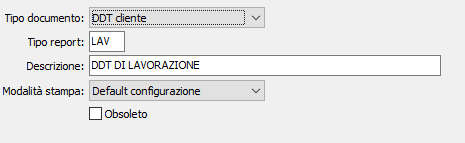

Tipi report
La tabella consente di configurare tipi di report diversi da quelli standard da utilizzare sulle causali dei documenti.

TIPO DOCUMENTO: identifica il tipo di documento: DDT cliente, fattura cliente, ordine cliente, packing list, offerta cliente, ordine fornitore, autofattura.
TIPO REPORT: codice alfanumerico di 3 caratteri per identificare il tipo report in esame. Sul campo sono attive le funzioni di ricerca (F9) sulla tabella stessa.
DESCRIZIONE: campo alfanumerico di 50 caratteri per descrivere il tipo di report.
MODALITÀ DI STAMPA: indica la modalità di stampa da utilizzare: default configurazione, stampante laser carta normale, stampante laser modulo, stampante ad aghi.
OBSOLETO: flag attivabile dall’utente per inibire il possibile utilizzo dell’elemento di tabella in esame nelle successive transazioni.